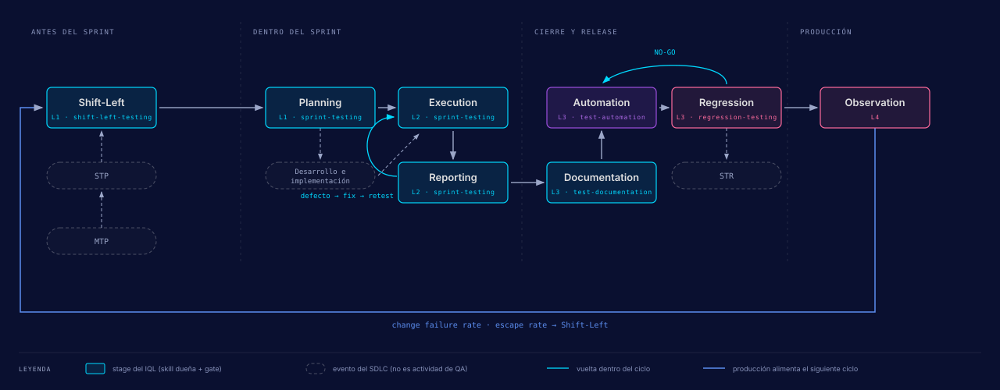

Este repo y el IQL: de la metodología al código
El IQL dice qué hay que hacer en cada momento del ciclo de calidad. Este repo es una implementación concreta: qué skill ejecuta cada stage, qué artefactos deja en Jira, dónde está escrita la doctrina y con qué herramientas habla el agente.
Método e implementación
El IQL (Integrated Quality Lifecycle) es la metodología de UPEX: 15 steps agrupados en tres fases (Early-Game, Mid-Game y Late-Game) y ocho stages que se ejecutan y se gatean. La versión oficial está en upexgalaxy.com/metodologia.
Este repo pone esa metodología a funcionar sobre Playwright, TypeScript y Bun. Cada stage tiene una skill que lo ejecuta (salvo Observation), cada skill se detiene en checkpoints donde una persona revisa y decide, y cada artefacto queda enlazado desde la historia de usuario hasta la corrida de regresión que valida el release. El resumen del reparto: el agente ejecuta, la evidencia prueba cada conclusión y la persona toma la decisión.
Los 8 stages y quién los ejecuta
Los stages tienen nombre y nunca número. La numeración vieja chocaba con los steps del IQL,
así que sobrevive en un solo lugar: la tabla de equivalencias de
.agents/skills/agentic-qa-core/references/stage-gates.md.

| Stage | Momento | Skill dueña | Qué deja al terminar | Autonomía (0-5) |
|---|---|---|---|---|
| Shift-Left | Pre-sprint, por lotes | shift-left-testing |
ACs reescritos, huecos convertidos en preguntas para PO y Dev, el ATP pre-sprint
escrito en el campo {{jira.acceptance_test_plan}}, las etiquetas
shift-left-reviewed y shift-left-{YYYY-MM-DD}, y la
historia movida a estimation
|
2 |
| Planning | En el sprint | sprint-testing |
ATS, ATP y ATR creados en ese orden, test cases derivados de los ACs y la decisión de qué superficies (UI, API, DB) se prueban | 2 |
| Execution | En el sprint | sprint-testing |
Smoke primero como Go/No-Go, exploración por UI, API y DB (la "trifuerza"),
evidencia en la carpeta evidence/ y bugs propuestos con su severidad
|
3 |
| Reporting | En el sprint | sprint-testing |
ATR completo, comentario de QA en la historia, links de trazabilidad verificados | 2 |
| Documentation | Post-sprint | test-documentation |
Veredicto de ROI por escenario (Candidate, Manual o Deferred); cada Candidate entra
al RTP con la etiqueta regression-candidate
|
2 |
| Automation | Post-sprint | test-automation |
spec.md y automation-plan.md aprobados, tests KATA con
@atc, verificación en contexto limpio y un PR
|
2, y 3 dentro del plan aprobado |
| Regression | Post-sprint | regression-testing |
Cada falla clasificada, pass-rate y tendencia, veredicto GO / CAUTION / NO-GO y un RTR por veredicto | 3 (4 en un GO limpio) |
| Observation | Producción | ninguna todavía | Declarado: señales de producción (SLO, error budget, RUM, canary) convertidas en ítems de backlog que reabren el siguiente Shift-Left | 3 (declarada) |
Ninguna skill de .agents/skills/ lo ejecuta. Su unidad operativa sería una
rutina agéntica (una corrida recurrente o autónoma, no una skill que alguien invoca), y
por eso no tiene checklist de Definition of Done: un checklist vacío parecería un gate
implementado. Se nombra para que el ciclo no termine en Regression. El detalle está en
Observation.
Dos piezas quedan fuera de la tabla a propósito:
- Onboarding
-
Se hace una vez por proyecto.
project-discoverygenera la base de.context/por ingeniería inversa,project-contextproduce los mapas de negocio y el master test plan, yadapt-frameworkconecta KATA con el stack del proyecto. - Sprint close
- Es el borde del lote, no un stage. Ahí se cierran el STP y el STR del sprint, y lo hace quien llegue primero: Reporting o Regression. Tiene su propio bloque de DoD.
Cada stage tiene además un contrato agéntico: qué hace el agente, qué firma la persona, qué
evidencia tiene que sobrevivir, cuánta autonomía tiene y si hace falta un verificador
separado. Ningún stage pasa de 3 en la escala de autonomía. Automation, el único que llega a
3 dentro de su plan, es también el único con verificador obligatorio (/pr-review-lead
o /judgment-day en contexto limpio).
Perfil manual y perfil agéntico
El método no cambia cuando cambia quien ejecuta. Los gates están escritos contra artefactos observables, no contra quién los produjo.
| Perfil | Quién ejecuta | Quién decide |
|---|---|---|
| Manual | Un QA, a mano | El mismo QA |
| Agéntico | Una skill bajo el modelo de orquestación | Una persona en cada checkpoint, según el contrato del stage |
En los dos perfiles son idénticos la secuencia de stages, los checklists, la escalera de artefactos, los links de trazabilidad y la vara de evidencia para GO/NO-GO. Un equipo sin IA corre el mismo ciclo. Un agente que no cumple un gate no puede saltarlo por ser agente, y una persona que lo salta se saltó el mismo gate. Lo que el perfil agéntico compra es velocidad y consistencia en el trabajo mecánico; la mitad de decidir sigue siendo humana.
El agente trabaja como centro de comando: despacha subagentes para leer, ejecutar y
verificar, y cada uno reporta antes de avanzar. Para trabajo que no cabe en un turno (una
historia completa, un módulo) existe un segundo ejecutor opcional, el worker supervisado,
coordinado por la skill orca-orchestration. Si el runtime de orquestación no
está instalado, las skills no lo mencionan y el trabajo sigue por subagentes.
La escalera de artefactos
Cada plan y cada corrida es un ítem propio de Jira con un título que dice su altura en el
primer token: {ACRONYM}: {scope}: {desc}. El ítem es la forma preferida; el
custom field de la historia queda como fallback. La excepción es el ATP pre-sprint, que vive
solo en el campo hasta que Planning crea el Test Plan a partir de él. La norma ratificada
está en .agents/skills/agentic-qa-core/references/planning-ladder.md.
| Altura | Plan | Corrida | Cuántos |
|---|---|---|---|
| Producto |
MTP Master Test Plan: el Epic QA Master Test Plan más
.context/master-test-plan.md
|
(no tiene) | 1 por proyecto |
| Feature | FTP Feature Test Plan | (no tiene) | 1 por feature Epic |
| Sprint | STP Sprint Test Plan |
STR Sprint Test Results, p. ej.
STR: Sprint#30: Regression Testing
|
1 por sprint |
| Historia | ATP Acceptance Test Plan |
ATR Acceptance Test Results (ATR: {STORY-KEY}: Story Testing)
|
1 por historia |
| Regresión | RTP Regression Test Plan (vive siempre, nunca se completa) | RTR Regression Test Results | 1 RTP por proyecto o módulo; 1 RTR por veredicto |
Debajo de la escalera están el ATS (Acceptance Test Set, uno por historia,
ATS: {STORY-KEY}: {story title}), cuyo link a la historia es el que da
cobertura en Xray, y los TC (issues de tipo Test). Un Test Set a nivel
feature (TS:) es opcional.
Cada artefacto tiene un solo hogar, definido en tres ejes:
parent -> Epic de proceso QA (qué balde lo registra)
issue link -> alcance probado (historia, feature Epic o sprint)
components -> módulo del producto (qué parte del producto toca)| Epic de proceso QA | Qué cuelga de él |
|---|---|
QA Master Test Plan |
Todos los Test Plan: FTP, STP, ATP, RTP |
QA Test Repository |
Todos los Test (test cases) |
QA Test Artifacts |
Test Executions (STR, ATR, RTR), Preconditions y Test Sets (ATS, TS) |
QA Defect Management |
Bugs, Defects e Improvements |
Nunca se cuelga un artefacto de QA de un Epic de producto. La relación con la historia va por issue link.
Ciclo de vida de cada artefacto
Crear un artefacto no alcanza. Un ATP congelado en Planning o un ATR en
ACTIVE después de que el stage cerró le dicen al equipo que el trabajo no se
hizo. Por eso cada stage es dueño del estado de lo que creó, y
.agents/skills/agentic-qa-core/references/artifact-lifecycle.md define para
cada artefacto dónde nace, quién lo mueve y dónde termina. Otras reglas del mismo archivo:
-
El
assigneese pone en el momento de crear. Xray rechaza editar la membresía de un Test Plan que no es tuyo. -
Si un slug de transición no existe en el proyecto, el agente lista las transiciones
reales, te propone la más parecida en una sola pregunta y recomienda
bun run jira:sync-workflows. Nunca adivina un id ni se salta el paso en silencio. - Cada stage cierra con el verificador liviano: artefactos, links, estados, assignee, parent y components, campos escritos, checkpoint de progreso y footer de sesión, cada línea con un SÍ o un N/A explícito.
El quality gate: GO / CAUTION / NO-GO
El veredicto de release lo emite regression-testing (los umbrales exactos son
los de su SKILL.md) con un puntaje ponderado (máximo 9) a partir de cuatro
factores: pass rate, regresiones, tests críticos y tests flaky.
| Puntaje | Veredicto | Qué pasa |
|---|---|---|
| 7 o más | GO | Release aprobado |
| 4 a 6 | CAUTION | Revisión manual y riesgos aceptados documentados; la persona decide |
| Menos de 4 | NO-GO | Release bloqueado: se arreglan las regresiones y se vuelve a correr |
Hay vetos que ignoran el puntaje: nunca hay GO automático si falla un test
@critical, si existe una regresión de severidad alta o crítica, o si el pass
rate está por debajo de 90%. Cada falla se clasifica como REGRESSION, FLAKY, KNOWN,
ENVIRONMENT o NEW TEST, y la palabra FLAKY solo se permite con al menos cinco corridas de
historial.
Dónde vive la doctrina
El modelo de trabajo no se improvisa por sesión. Está escrito en pocos lugares y las skills lo citan en vez de copiarlo.
AGENTS.md- La memoria del agente, cargada en cada sesión: reglas críticas (§1), capa de comportamiento (§2, espejo humano en Personalidad de la IA), modo de orquestación (§3), mapa de qué cargar por tarea (§4), registro de skills y MCPs (§5) y resolución de herramientas (§6).
.agents/skills/REGISTRY.md- Las reglas compactas de cada skill, que se inyectan en la sección "Project Standards" de cada briefing a un subagente.
## Subagent Dispatch Strategy- Una sección dentro de cada skill de workflow que dice qué pasos se delegan y con qué patrón (Single, Sequential, Parallel, Background).
.agents/skills/agentic-qa-core/references/-
La biblioteca compartida de doctrina: un archivo por tema, y cada uno abre diciendo qué
regla lo cita. La lista es la de la carpeta (
ls).
Skills
Una skill es una capacidad del agente guardada en .agents/skills/ (compartida
por Claude Code, OpenCode y Codex). Se activa cuando lo que pides coincide con su
descripción, o la invocas por nombre. Las de la comunidad las instala
cli/install.ts a nivel de proyecto y no están versionadas en el repo. El
catálogo es .agents/skills/REGISTRY.md (generado por
bun run skills:registry; AGENTS.md §5 tiene la misma tabla).
Comandos
Los comandos /nombre son alias de transporte: eligen una skill y un modo y le
pasan tus argumentos. No tienen workflow propio. La fuente única es
.agents/compatibility/command-aliases.json y los wrappers de Claude Code y
OpenCode se generan con bun run agents:compat. Codex no tiene comandos: ahí
invocas la skill directamente. El manifest lista cada alias con su skill, su modo y su
propósito en description.
Integraciones
Las skills nunca nombran una herramienta concreta. Escriben una etiqueta como
[DB_TOOL] y la tabla de resolución de AGENTS.md (§6) decide qué
herramienta es. Si cambias la fila, cambias el backend sin tocar ninguna skill. La regla
general: primero la CLI (gasta menos tokens) y el MCP como fallback.
| Etiqueta | Dominio | Principal | Fallback |
|---|---|---|---|
[ISSUE_TRACKER_TOOL] |
Jira: historias, bugs, epics | /acli |
MCP de Atlassian (opcional, ver mcp-atlassian-optin.md) |
[AUTOMATION_TOOL] |
Navegador | /playwright-cli |
MCP de Playwright |
Dos filas de ejemplo; la tabla completa, con todas las etiquetas, es la de
AGENTS.md §6. La modalidad del TMS se decide una vez por proyecto. En
jira-xray, ATP y ATR son Test Plan y Test Execution de Xray. En
jira-native (sin Xray) viven en custom fields de la historia y comentarios,
y los test cases son issues de tipo Test. Las guías de conexión están en
Jira y Xray, DBHub,
OpenAPI y
Postman.
MCPs
Un MCP (Model Context Protocol) es un puente entre el agente y un sistema vivo. El conjunto
canónico es lo que declara .mcp.json (Claude Code). El mismo conjunto existe en
opencode.jsonc y en .codex/config.toml, cada uno en su formato, y
bun run agents:compat:check falla si un server aparece en un host y no en otro.
Solo viven ahí los servers locales que leen valores del proyecto y los que no necesitan
clave; los remotos cuyo único contenido era una API key (búsqueda web, Postman) se conectan
a nivel del harness y los skills los resuelven por capacidad (cómo).
Qué hace cada server y cuándo se usa está en la tabla de MCPs de AGENTS.md §5;
las variables que necesita cada uno las lista bun run setup:doctor.
El árbol .context/PBI/
.context/PBI/ es una caché local de Jira, ignorada por git. La genera
scripts/sync-jira-issues.ts y la reconstruyes entera con
bun run context:hydrate. Jira es la fuente de verdad: los archivos
sincronizados nunca se escriben a mano. Se regenera en cada sync, así que versionarla solo
produciría conflictos entre sesiones que sincronizaron en momentos distintos. Un módulo es
un Epic (1:1).
| Tier | Fuente de verdad | ¿En git? | Cómo se recupera |
|---|---|---|---|
| SYNC | Jira | No | bun run context:hydrate |
| COMMIT | Este repo | Sí | git |
| LOCAL | Nada durable | No | No se recupera: es descartable |
El árbol completo, con el tier de cada ruta, está en
.context/PBI/README.md (versionado) y en AGENTS.md §9.
Tres reglas para trabajar con esta caché:
-
Para leer el detalle de un issue (custom fields, ACs, ATP, ATR, comentarios) usa
bun run jira:sync-issues get <KEY> --include-commentsy lee el.mdgenerado.acli viewdevuelve null en los custom fields. -
Cada Test aparece una sola vez, bajo la historia que cubre. Uno sin camino a ninguna
historia cae en
epics/_orphans/tests/, que funciona como lista de pendientes de trazabilidad. -
Un archivo
[LOCAL]existe solo en la máquina que lo creó. Si otra máquina necesita ese contenido, va a Jira.
Fuera de PBI/ viven los artefactos de proyecto: los mapas en
.context/business/, .context/master-test-plan.md y las decisiones
de arquitectura de tests en .context/ADR/. El estado de sesión va en
.session/, para que un re-sync no lo pise. Para ver qué está cubierto sin
llamar a Jira, bun run tests:map genera un mapa de cobertura en HTML.